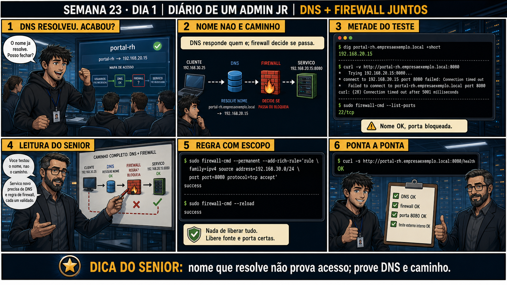

Semana 23 · Dia 1 — Consolidação | Nível Júnior — Redes
DNS ou Firewall? Diagnóstico Combinado
dois testes separados, um pra resolução de nome, outro pra conectividade — nunca misture os dois
ANTES DE ALTERAR, OBSERVE. DEPOIS DE ALTERAR, VALIDE.
1. O chamado
Chamado #2301: "A aplicação não consegue conectar em db-externo.empresa.com. Preciso
saber AGORA se é problema de DNS ou de firewall, porque são times diferentes que vão resolver." Os dois
sintomas — "não resolve o nome" e "resolve mas não conecta" — parecem idênticos pra quem só vê "erro de
conexão" na aplicação. A diferença só aparece testando as duas camadas
isoladamente.
💡 Passa o mouse nas palavras destacadas pra ver uma dica rápida — clica se quiser a explicação completa com analogia.
2. Antes de ver as opções — tenta responder
🧠 Recall ativo: qual comando testa SÓ resolução de DNS, sem tentar conectar em porta nenhuma — e
qual comando testa SÓ conectividade de porta, sem depender de resolver nome nenhum?
dig (ou nslookup) testa SÓ resolução de nome — pergunta ao DNS "qual é o IP de X" e não tenta se
conectar em porta nenhuma depois. Já nc -zv (ou telnet) testando DIRETO no IP (não no nome) testa SÓ
conectividade de porta — bypassa completamente o DNS, então se isso falhar, você sabe que não é
problema de nome, é problema de rede/firewall entre você e aquele IP especificamente.
3. Questão comentada — clica numa alternativa
Você roda dig db-externo.empresa.com e recebe um IP válido de volta (10.50.0.20)
sem erro nenhum. Isso já é suficiente pra descartar completamente qualquer problema de DNS no chamado?
💡 Analogia do Sênior para Fixar: O princípio fundamental de 01 DNS FIREWALL COMBINADOS é como o alicerce de sustentação de um viaduto: garante que a estrutura de comunicação suporte alto tráfego sem colapsar.
4. Decodificador de conceitos
Clica em qualquer termo pra ver a definição completa e uma analogia do dia a dia:
5. Ferramentas e leitura da evidência
| Teste | Isola |
|---|---|
| dig <nome> | Só resolução de DNS — não tenta conectar em nada. |
| nc -zv <IP> <porta> | Só conectividade de porta — bypassa o DNS totalmente. |
| nft list ruleset | Confirma se existe regra bloqueando aquele IP/porta especificamente. |
--- teste 1: SÓ resolução de nome, sem tentar conectar --- $ dig +short db-externo.empresa.com 10.50.0.20 ✅ DNS resolve corretamente --- teste 2: SÓ conectividade, direto no IP, bypassando o nome --- $ nc -zv 10.50.0.20 5432 nc: connect to 10.50.0.20 port 5432 (tcp) failed: Connection timed out ❌ conectividade falhando — DNS já descartado --- confirmando a causa provável no firewall --- $ sudo nft list ruleset | grep 10.50.0.20 # nenhuma regra específica encontrada — pode ser bloqueio no equipamento intermediário, não neste host --- conclusão do chamado --- DNS: OK (teste 1 confirma) Conectividade: FALHA (teste 2 confirma) Encaminhar pro time de rede/firewall, não pro time de DNS.
5.1 O painel 4 da prancha de hoje mostra o júnior testando direto com curl https://db-externo.empresa.com, recebendo erro, e já concluindo "é DNS" sem nenhum teste adicional
Um colega vê qualquer erro de conexão e assume DNS por padrão, sem isolar as camadas.
Por que um erro genérico do curl (como "connection failed") NÃO é suficiente
pra saber se a causa é DNS ou conectividade, sem testes adicionais?
💡 Analogia do Sênior para Fixar: Diagnosticar anomalias em 01 DNS FIREWALL COMBINADOS é como o eletricista usando o multímetro no quadro de disjuntores: mede a passagem de sinal no ponto exato da falha.
5.2 "Se dig funciona do meu notebook, funciona do servidor da aplicação também?"
Um colega testa dig do próprio notebook, vê que funciona, e assume que o servidor da aplicação também vai resolver do mesmo jeito.
Por que testar dig do SEU notebook não é garantia de que o SERVIDOR da
aplicação resolve o mesmo nome do mesmo jeito?
💡 Analogia do Sênior para Fixar: Aplicar as boas práticas de 01 DNS FIREWALL COMBINADOS é como o protocolo de segurança da aviação: elimina pontos únicos de falha e garante previsibilidade operacional.
6. Procedimento profissional
- Rode o teste SEMPRE do ponto de origem real do problema, não de qualquer máquina disponível.
- Teste resolução de DNS isoladamente com dig, sem tentar conectar em nada ainda.
- Se DNS resolver, teste conectividade direto no IP resolvido com nc -zv, bypassando o nome.
- Só depois dos dois testes separados, direcione o chamado pro time certo (DNS ou rede/firewall).
- Nunca conclua a causa por uma mensagem de erro genérica combinada (como curl sozinho).
7. Laboratório guiado — marca conforme for testando
Segurança: execute os testes apenas em VMs descartáveis e confirme nomes de discos, hosts e arquivos antes de cada comando.
- Numa VM de laboratório, rode dig contra um nome que resolve corretamente, e confirme o IP retornado.Resultado esperado: IP válido retornado sem erro.
- Bloqueie a porta de destino com uma regra nftables temporária (Semana 15), e teste nc -zv direto no IP.Resultado esperado: conexão falhando, mesmo com DNS funcionando normalmente.🧑🏫 Aqui entra o Mentor (em breve): se você não lembrar a sintaxe exata do nftables, este é o ponto onde o chat com o Sênior-IA vai te lembrar da Semana 15.
- Remova a regra de firewall, e confirme que nc -zv volta a funcionar.Resultado esperado: conexão bem-sucedida depois da remoção.
- Documente os dois testes separadamente (DNS e conectividade), como se fosse fechar o chamado #2301.Resultado esperado: relatório claro apontando qual camada era a causa real.
8. Validação e encerramento
- dig testa só resolução de nome; nc -zv direto no IP testa só conectividade — nunca misture os dois num único teste.
- curl e ferramentas combinadas dão erro genérico que não distingue qual camada falhou.
- O teste válido é sempre feito do ponto de origem real do problema, não de qualquer máquina disponível.
- DNS confirmado funcionando direciona a suspeita pra conectividade/firewall, não o contrário.
Rollback e limites
Os testes de diagnóstico (dig, nc) são só observação, sem risco de alteração. O
cuidado real é de comunicação: encaminhar um chamado pro time errado (DNS quando é firewall, ou vice-versa)
sem evidência clara gera atrito entre equipes e atraso na resolução — os dois testes separados existem
exatamente pra evitar esse tipo de erro de direcionamento.
💡 Sobre repetição espaçada: "isolar camada por camada" é o método mais
reaplicado do curso inteiro — VPN (Semana 18), tcpdump (Semana 19), NFS (Semana 21), Samba (Semana 22), e
agora DNS+firewall juntos. O Anki vai consolidar esse padrão como o núcleo do diagnóstico de rede.
9. Resposta final
Alternativa correta: A. Nesta aula, dig confirmando IP válido já foi
suficiente pra descartar DNS e direcionar a suspeita pra firewall/conectividade. O ponto central do caso é
este: dois testes separados, um pra resolução de nome, outro pra conectividade — nunca misture os dois.
🔓 O que você desbloqueou hoje
Capacidade de separar diagnóstico de DNS e de firewall com evidência, mesmo
quando o sintoma inicial parece idêntico. Amanhã você combina diagnóstico de processo (systemctl/ps) com
diagnóstico de rede — outro par de camadas que costuma se confundir sob pressão.